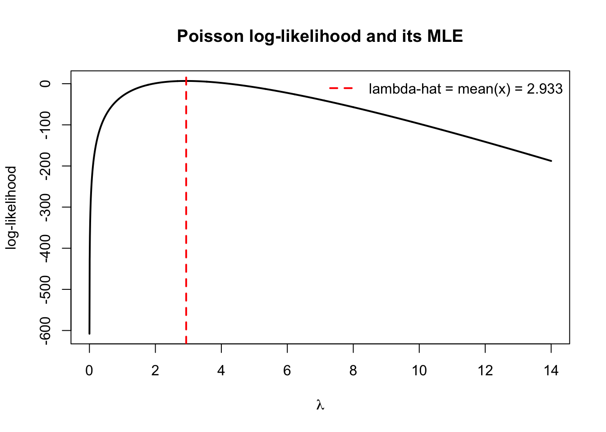

Frequentist inference is a way of drawing conclusions from data based on the idea that probability describes long-run frequency. In this framework, the parameter we want to estimate is treated as fixed but unknown, while the data are considered random because different samples would give different results. Inference focuses on how an estimator behaves if we were to repeat the study many times. Methods such as confidence intervals and hypothesis tests are built on this idea of repeated sampling. The goal is to ensure that the procedure performs well in the long run.
11.1 Frequentist Foundation
In statistical inference, our goal is to learn about unknown characteristics of a population using observed data. These characteristics are called parameters. Examples include the population mean \(\mu\), variance \(\sigma^2\), or the probability of success \(p\) in a Bernoulli experiment.
To understand frequentist inference, there are a few key ideas you need to know. We need to understand the difference between parameters (the true but unknown values for a population) and statistics (numbers we calculate from a sample). We also need to know the difference between an estimator (a method or formula) and an estimate (the actual number we get from data). Another important idea is the sampling distribution, which describes how a statistic would vary if we repeated the experiment many times. This can be explored using real experiments, observed data, or simulations. Finally, we study the bias and variance of an estimator to see how accurate and how variable it is in the long run.
Parameters and Statistics
A parameter is a numerical quantity that describes a population or probability distribution. It is fixed but usually unknown.
Examples:
The true mean height of all students at a university.
The probability that a machine component fails within one year.
The average waiting time in a queue.
A statistic is a quantity computed from sample data. Because it depends on random data, it is itself a random variable.
Examples:
Sample mean \(\bar{X}\)
Sample variance \(S^2\)
Sample proportion \(\hat{p}\)
Statistics are used to estimate the unknown parameters.
Estimators and Estimates
An estimator is a rule, formula, or method used to estimate a parameter based on sample data.
Example: the sample mean
\[
\bar{X} = \frac{1}{n}\sum_{i=1}^{n} X_i
\]
is an estimator of the population mean \(\mu\).
Once the sample data are observed, the estimator produces a numerical value called an estimate.
An estimate is the numerical value you get after applying the estimator to a particular dataset. Once the data are observed, the randomness is gone and you obtain a single number.
Example: if you compute the sample mean from the data and obtain
\[
\bar{x} = 5.24,
\]
then 5.24 is the estimate of \(\mu\).
Sampling Distribution vis Simulation
In practice, sampling distributions can sometimes be derived mathematically. However, simulation provides a simple and powerful way to study them. The basic idea is:
Assume a data-generating model.
Simulate many samples from that model.
Compute the statistic for each sample.
Examine the distribution of those values.
For example, to study the sampling distribution of the sample mean:
Generate a sample of size n from a distribution.
Compute \(\bar{X}\).
Repeat the process many times.
Plot a histogram of the resulting sample means.
As the number of repetitions increases, the histogram approximates the sampling distribution of the estimator.
This approach illustrates how simulation can be used to understand statistical inference without relying solely on mathematical derivations.
Bias and Variance of an Estimator
An estimator is considered unbiased if its expected value equals the true parameter.
Formally, an estimator \(\hat{\theta}\) of parameter \(\theta\) is unbiased if
\[
E(\hat{\theta}) = \theta.
\]
If the expected value differs from the true parameter, the estimator is said to be biased.
Bias of an estimator measures whether an estimator systematically overestimates or underestimates the parameter.
For example, the sample mean \(\bar{X}\) is an unbiased estimator of the population mean \(\mu\).
Even if an estimator is unbiased, it may still vary substantially from sample to sample.
The variance of an estimator measures how much the estimator fluctuates across different samples.
An estimator with smaller variance is generally preferred because it produces more stable estimates.
In practice, both bias and variance are important when evaluating the quality of an estimator.
11.2 Likelihood and Maximum Likelihood Estimation
In the previous section, we introduced estimators and sampling distributions. We now consider a systematic way to estimate unknown parameters using observed data. One of the most widely used approaches is maximum likelihood estimation.
Maximum likelihood estimation is based on the idea of choosing parameter values that make the observed data most plausible under the assumed statistical model.
Likelihood function
Suppose we observe data \(x_1, x_2, \dots, x_n\) from a probability distribution that depends on an unknown parameter \(\theta\).
The likelihood function describes how plausible different values of \(\theta\) are, given the observed data.
For independent continuous observations with probability density function, the likelihood function is
The likelihood function is not a probability distribution for \(\theta\). Instead, it is a function that measures how well different parameter values explain the observed data.
In other words, the likelihood answers the question:
If the parameter were \(\theta\), how likely is it that we would observe the data we actually obtained?
Maximum likelihood estimator (MLE)
The maximum likelihood estimator (MLE) is the value of \(\theta\) that maximises the likelihood function. Formally,
\[
\hat{\theta} = \arg\max_{\theta} L(\theta).
\]
In practice, it is often easier to work with the log-likelihood function
\[
\ell(\theta) = \log L(\theta),
\]
because logarithms convert products into sums, which simplifies calculations. Maximising the likelihood or the log-likelihood produces the same estimator.
Maximum likelihood estimators have several useful properties.
Under suitable conditions, the MLE tends to:
be consistent, meaning it approaches the true parameter as the sample size increases;
have small variance among reasonable estimators;
be approximately normally distributed when the sample size is large.
These properties make maximum likelihood estimation a standard method for parameter estimation in statistics.
Bernoulli Example: Consider a Bernoulli experiment where \(X_i \sim \text{Bernoulli}(p),\) and \(p\) is the probability of success.
Suppose we observe \(x_1, x_2, \dots, x_n.\) The likelihood function is
You can also use the second derivative test to confirm that this is the maximum solution.
Thus, the MLE for the Bernoulli parameter \(p\) is simply the sample proportion.
set.seed(123)# True parameter (only for simulation)p_true <-0.35n <-40# try larger n, what do you see?# Data: Xi ~ Bernoulli(p_true)x <-rbinom(n, size =1, prob = p_true)# Sufficient statistic and MLEs <-sum(x)p_hat <-mean(x) # s / ns
[1] 18
p_hat
[1] 0.45
Based on the observed data, the probability of success that best explains seeing 18 successes out of 40 trials is \(\hat{p} = 0.45\). Because the sample size is small, the MLE \(\hat{p}\) has high variability and may differ noticeably from the true parameter \(p\). As the sample size increases, the Law of Large Numbers implies that the sample proportion converges to \(p\), so \(\hat{p}\) becomes more stable and typically closer to the true value.
Poisson Example: Let \(x_1, x_2, \dots, x_n\) be a random sample from \(X_i \sim \text{Poisson}(\lambda)\). Then, the likelihood function is
# Likelihood functionL <-function(lambda, x) { n <-length(x) s <-sum(x)exp(-n * lambda) * lambda^s /prod(factorial(x))}# Log-likelihood functionll <-function(lambda, x) { n <-length(x) s <-sum(x)-n * lambda + s *log(lambda)} # we drop constants since they don't affect the maximiser# Starting grid at 0.001 because log(0) is undefined.lambda_grid <-seq(0.001, max(x) *2, length.out =2000)# For each value of lambda in lambda_grid, compute ll(lambda, x) and store the result.ll_vals <-sapply(lambda_grid, ll, x = x) plot(lambda_grid, ll_vals, type ="l", lwd =2,xlab =expression(lambda),ylab ="log-likelihood",main ="Poisson log-likelihood and its MLE")abline(v = lambda_hat, col ="red", lwd =2, lty =2)legend("topright",legend =sprintf("lambda-hat = mean(x) = %.3f", lambda_hat),col ="red", lty =2, lwd =2, bty ="n")

opt <-optimize(ll,interval =c(1e-6, max(x) *3), # small positive numbers to avoid log(0)x = x,maximum =TRUE)opt$maximum
[1] 2.933329
lambda_hat
[1] 2.933333
These two values will agree up to numberical precision, showing that:
Point estimators, such as the sample mean or the maximum likelihood estimator, provide a single numerical estimate of an unknown parameter. However, because the data are random, different samples will produce different estimates. As a result, a point estimate alone does not convey how uncertain the estimate might be.
To account for this uncertainty, we often report an interval estimate rather than a single value.
A confidence interval is a range of plausible values for the unknown parameter based on the observed data.
Example: Suppose we estimate the mean waiting time in a queue using the sample mean. If the sample mean is \(\bar{x} = 5.2\) minutes, we might ask:
How close is this estimate to the true mean?
Would a different sample give a very different value?
A confidence interval addresses these questions by providing a range of values that are consistent with the observed data. For example, \((4.7,\; 5.7)\) might be reported as a 95% confidence interval for the mean waiting time.
A confidence interval is constructed from sample data in such a way that, if the sampling procedure were repeated many times, a specified proportion of the intervals would contain the true parameter.
It is important to note that the parameter itself is fixed; it is the interval that varies from sample to sample.
Confidence Intervals for the Mean
Suppose we observe independent observations \(X_1, X_2, \dots, X_n\) from a population with mean \(\mu\) and variance \(\sigma^2\).
When the sample size is sufficiently large, the Central Limit Theorem implies that the sample mean is approximately normally distributed:
A 95% confidence interval of \((0.2958,0.6042)\) means that, over repeated sampling, approximately 95% of intervals constructed in this way would contain the true probability of success \(p\).
Poisson Example (cont): The variance of a Poisson random variable is
\[
\text{Var}(X) = \lambda.
\]
For a sample of size \(n\), the variance of the sample mean is
A 95% confidence interval of \((2.3205, 3.5462)\) means that, over repeated sampling, approximately 95% of intervals constructed in this way would contain the true parameter \(\lambda\).